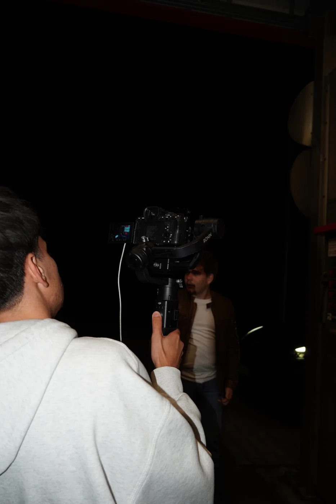
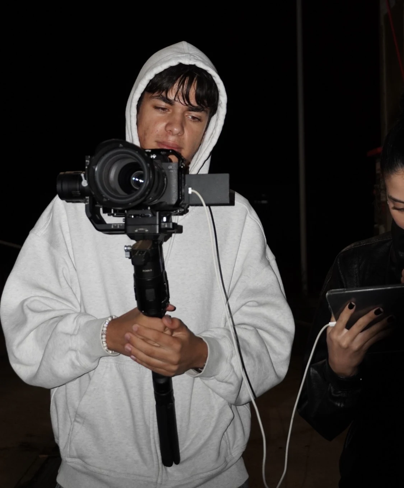
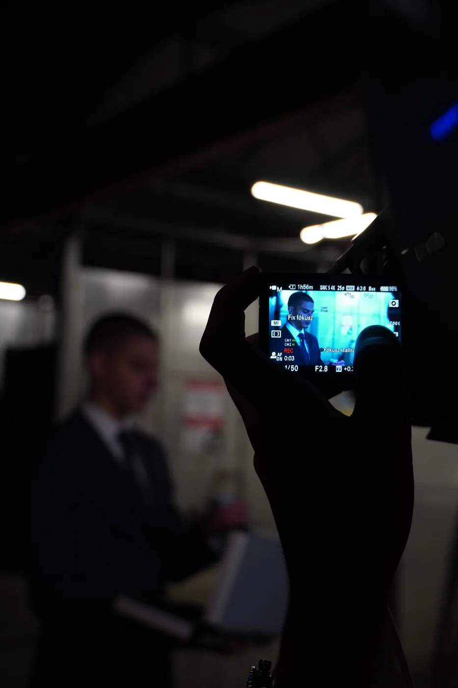
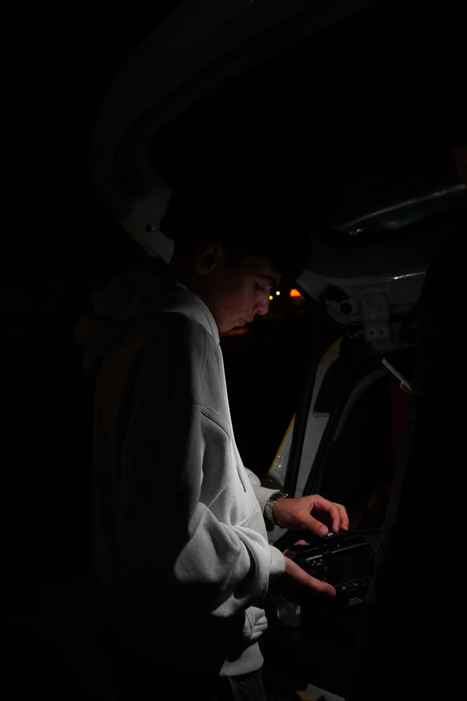
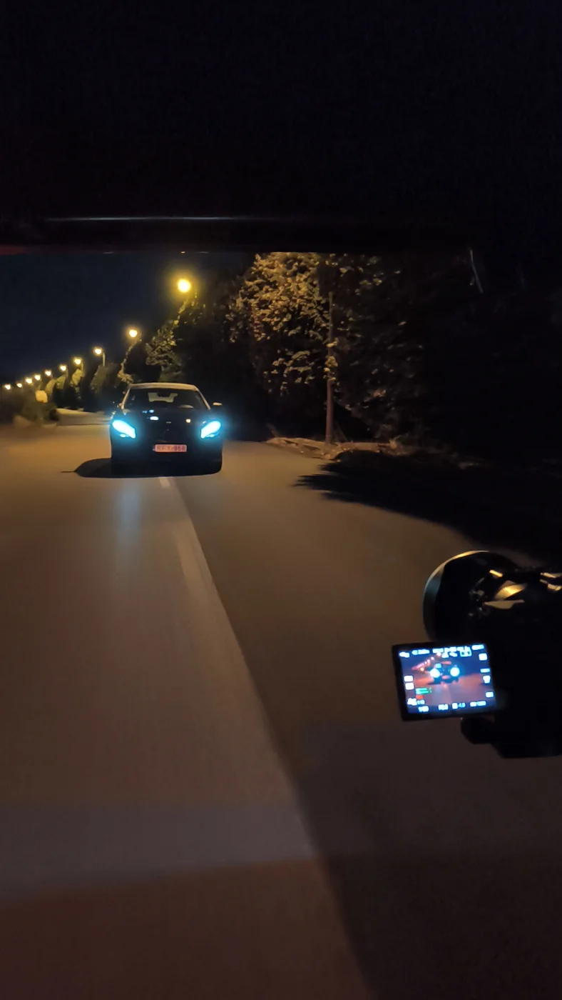
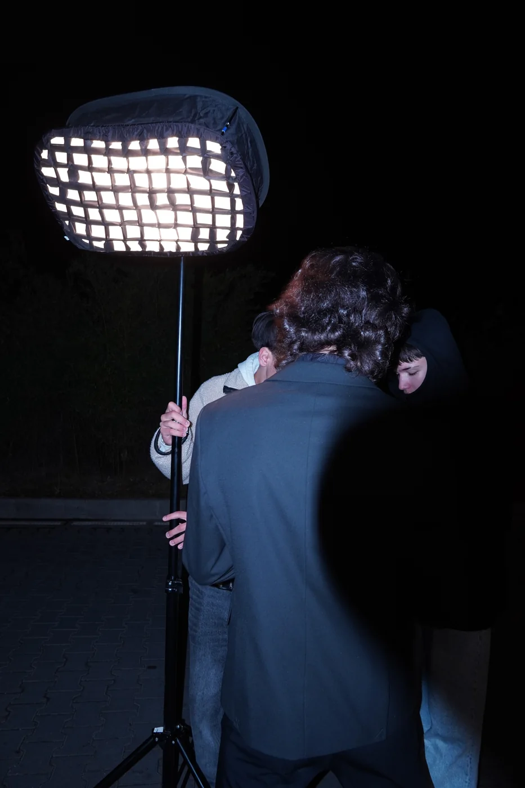

[ 01 — TIKTOK ]
TikTok-videók
TikTok-videók
készítése.
Rövid videók a márkád hangjához és a TikTok felületéhez igazítva.


Rövid videók a márkád hangjához és a TikTok felületéhez igazítva.

Az ötlettől a felvételig és az egyeztetett vágásig, a feladathoz illő formában.

Kampány, esemény vagy önálló videós elképzelés is lehet a közös munka kezdete.
Megbeszéljük a nézőt, a felületet és az elképzelést.
A forgatás, vágás és átadás részleteire egyedi ajánlat készül.
A megbeszélt terv szerint rögzítjük vagy vágjuk az anyagot.


